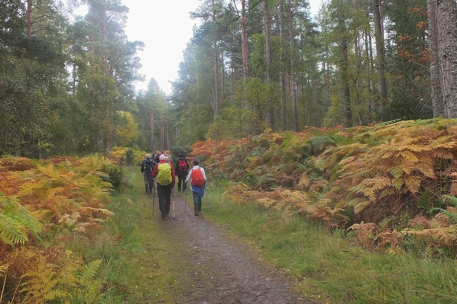

Loneliness and Cognitive Decline: The Hidden Brain Health Risk
Diet and exercise get most of the attention in brain-health advice. Feeling chronically disconnected from other people turns out to matter almost as much, and it's rarely mentioned.

Key takeaways
- Chronic loneliness is linked to higher dementia rates in long-running studies of older adults, independent of depression.
- Loneliness is a feeling, not a headcount. Someone with a full calendar can still feel isolated; someone who lives alone may not.
- The likely mechanisms include less mental stimulation, disrupted sleep and higher stress hormones over years, not a single dramatic event.
- Major dementia-prevention reviews now list social isolation alongside hearing loss, smoking and physical inactivity as a modifiable risk factor.
- Rebuilding regular, low-effort contact appears to help at any age. It's never too late to start.
Loneliness and cognitive decline are more closely linked than most people realize. Older adults who describe themselves as chronically lonely are diagnosed with dementia at meaningfully higher rates than socially connected peers, and the pattern holds up across multiple long-term studies. Researchers don't yet fully agree on why, but the leading explanations point to less mental stimulation, worse sleep, and years of elevated stress hormones quietly wearing on the brain.
Does loneliness actually raise dementia risk?
The short answer is: the association is real and it keeps showing up. Cohort studies that track thousands of older adults for a decade or more have repeatedly found that people who report persistent loneliness go on to develop dementia at higher rates than those who don't, even after researchers adjust for age, education and existing health conditions. This is an observational finding, not a controlled experiment, so it can't prove loneliness alone causes decline. But the size and consistency of the effect across different countries and research groups is why social isolation now appears on major lists of modifiable dementia risk factors, alongside better-known ones like hearing loss and inactivity.
It's worth being precise about what "modifiable" means here. It doesn't mean loneliness single-handedly causes dementia in any one person. It means that, across a population, reducing chronic loneliness is one of several changeable factors that appears to shift overall risk, similar in spirit to managing blood pressure or quitting smoking.
How does feeling isolated actually damage the brain?
Nobody has pinned down one single mechanism, and it's probably several things compounding over years rather than one clean pathway. A few candidates keep coming up in the research:
Less cognitive stimulation. Conversation is a genuine mental workout. It draws on language, memory, attention and social reasoning all at once, in a way that watching television or scrolling a phone doesn't. People who talk with others regularly are, in effect, exercising several brain networks daily without trying to.
Disrupted sleep. Loneliness is consistently linked with poorer sleep quality, and sleep is when the brain consolidates memories and clears metabolic waste. Chronic poor sleep is its own well-documented risk factor for cognitive decline, so it may act as one of loneliness's routes to the brain.
Elevated stress hormones. Feeling chronically disconnected activates the same stress-response systems as other ongoing stressors. Sustained high cortisol has been shown to affect the hippocampus, the brain region most central to forming new memories, over long exposure.
Is it loneliness itself, or something that tends to come with it?
This is the hardest part to untangle, and honest researchers say so. Loneliness rarely travels alone. It's tangled up with depression, reduced physical activity, worse diet and sometimes hearing loss, which itself makes conversation harder and can accelerate withdrawal from social life. Some studies try to statistically separate loneliness from depression and still find an independent link to cognitive decline, which suggests loneliness isn't simply standing in for depression. But no single study fully isolates every overlapping factor, so the honest position is that loneliness is a genuine, independent contributor for many people, layered on top of related risks rather than acting entirely alone.
COMPLEX
The memory formula we rate highest in 2026
Social habits are one piece of brain health. Advanced Memory Complex pairs citicoline, bacopa, phosphatidylserine and B-vitamins in a transparent, clinically-dosed label with a 60-day guarantee.
See Today's Price →How much social contact actually counts as protective?
There's no magic number of friends or weekly calls that researchers point to as a threshold. What matters more, based on the studies available, is having at least a few relationships that feel genuinely reciprocal, where you both give and receive support, rather than a large but shallow social circle. Quality of connection tends to predict wellbeing better than sheer quantity of contacts. A weekly phone call with someone who actually listens can outweigh a busy but superficial social calendar.
Face-to-face contact seems to carry an edge over text-based communication, likely because it demands more from the brain: reading tone, expression and timing in real time. That doesn't make texting or calling worthless. It just means an occasional visit or in-person group activity is worth prioritizing over messaging alone.
What if you live alone or your social circle has shrunk?
Living alone and feeling lonely are not the same thing, and this distinction matters. Plenty of people who live by themselves report feeling well connected, while people surrounded by family can feel isolated. If your circle has genuinely shrunk, whether from retirement, bereavement, moving, or hearing loss making conversation exhausting, the practical fix is usually structural rather than willpower-based: join something with a fixed schedule, so contact happens automatically instead of depending on motivation each week. A recurring class, volunteer shift, faith group or walking club removes the burden of having to plan and initiate every interaction yourself.
If hearing loss is part of what's driving withdrawal from conversation, it's worth having it checked. Straining to follow conversation is exhausting and is, on its own, linked to accelerated cognitive decline, quite apart from any effect of the resulting isolation.
Can rebuilding connection later in life still help?
The encouraging finding across this research is that it doesn't appear to be too late to act. Studies on social engagement programs for older adults, including group activities and structured volunteering, have found improvements in mood and, in some trials, on certain cognitive measures after participants built more regular contact. This won't reverse existing brain changes. But it suggests the brain keeps responding to social input throughout life, not just in a narrow window earlier on.
Pair rebuilt social contact with the other habits that have solid evidence behind them. Our full guide to how to improve your memory covers sleep, exercise and diet alongside social connection, and our piece on how social connection protects your brain as you age goes deeper into the mechanisms and the practical side of staying engaged.
Frequently asked questions
Does loneliness really increase dementia risk?
Large long-running studies consistently find higher dementia rates among older adults who report chronic loneliness. It's an association, not proof of a single cause, but it's consistent enough that major reviews now treat social isolation as a modifiable risk factor.
Is loneliness the same as living alone?
No. Loneliness is the subjective feeling of disconnection; living alone is a circumstance. Someone can live alone and feel connected, or be surrounded by people and feel lonely. The felt experience appears to matter more than household size.
Can rebuilding social connection help at any age?
There's no evidence it's too late. Social engagement programs in older adults have shown improvements in mood and some cognitive measures after building more regular contact, even later in life.
What's the fastest way to reduce loneliness?
A short, regular call or visit with the same person tends to help more than an occasional big event. Joining an existing group activity also removes the pressure of initiating contact every time.
Give your brain more to work with
Social connection is one piece of the puzzle. See the memory formulas our editors rate highest for 2026.
See the Top 5 Memory Formulas →Related: Social connection and brain health · What is cognitive reserve? · How to improve your memory · Best memory formulas of 2026